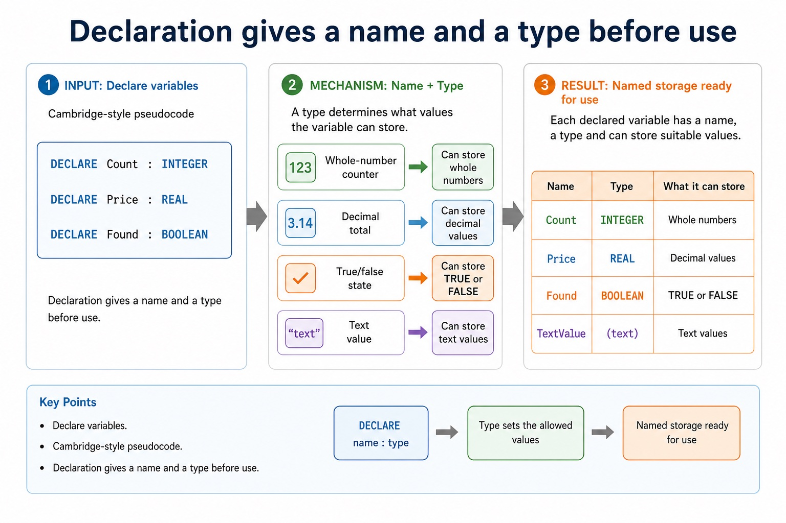
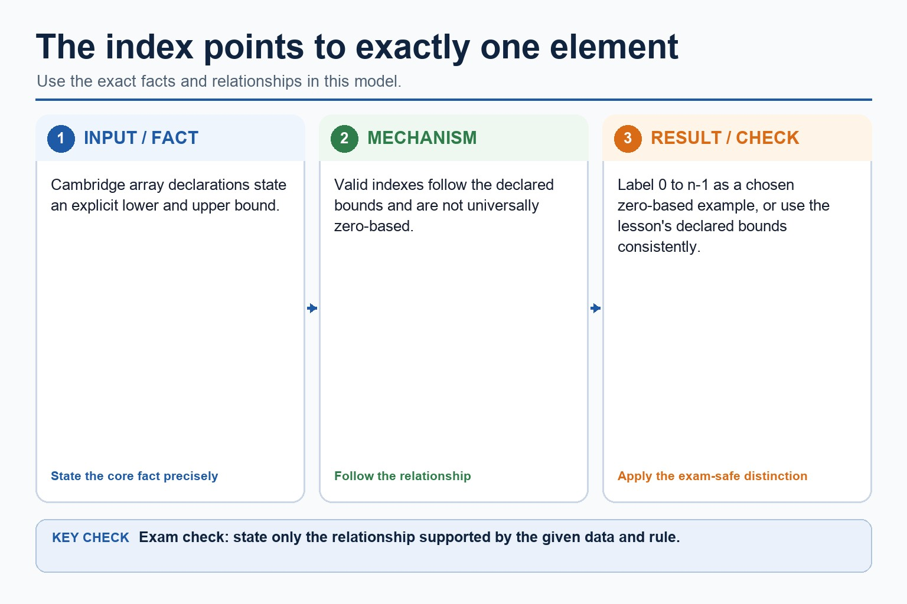
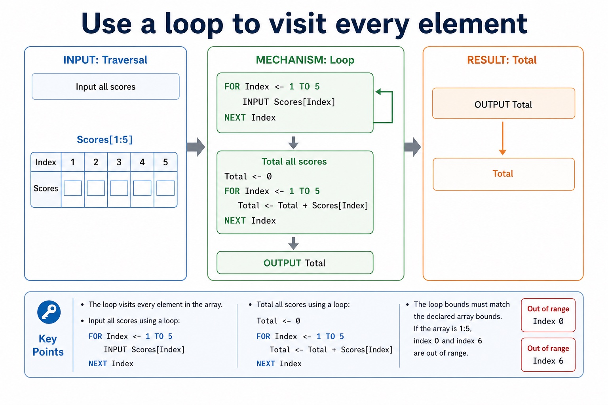
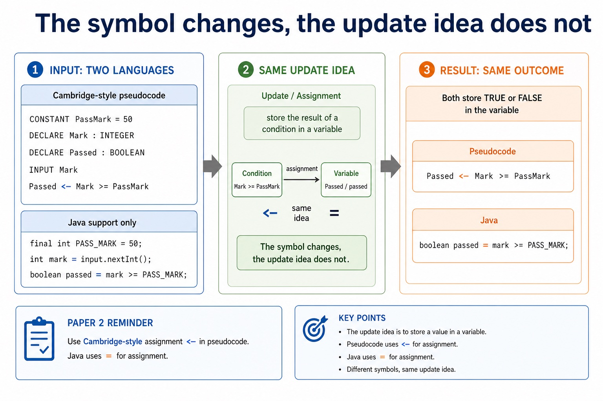

A one-dimensional array stores multiple values of the same type under one identifier. Each element is
accessed using an index. Instead of writing Score1, Score2, Score3
and hoping nobody asks for Score30, use Scores[Index] and let a loop do the walking.
Declareone-dimensional arrays with suitable bounds and type
Accessread and update individual elements using an index
Traverseuse loops to input, output, total or search array elements
142267355481549
Scores[3] is 55
One identifier. Many elements. One index at a time.
Why this matters
Paper 2 often awards marks for correct array declaration, index use, loop bounds and avoiding out-of-range access.
Common trap
Scores names the whole array. Scores[Index] accesses one element. The brackets are not decoration.
Warm-up hook
Would you really create 30 score variables?
A class has 30 test scores. Which approach scales cleanly?
Choose the structure that supports indexed access and looping.
Array model
A one-dimensional array is a linear collection
Same identifier
All elements belong to one array name.
Scores
Same type
At AS level, an array stores elements of the same data type.
ARRAY[1:5] OF INTEGER
Indexed access
An index selects one element.
Scores[3]
Scores[Index]
Chinese support: array 是一组同类型数据；index 是位置编号；element 是某一个具体格子里的值。
A one-dimensional array is a linear collection
A one-dimensional array is a linear collection: source-grounded visual explanation.
Lesson fact: Array model
Lesson fact: Same identifier
Lesson fact: All elements belong to one array name.
Lesson fact: Same type
Lesson fact: At AS level, an array stores elements of the same data type.
Lesson fact: ARRAY[1:5] OF INTEGER
Lesson fact: Indexed access
Lesson fact: An index selects one element.
Lesson fact: Scores[3]
Lesson fact: Scores[Index]
Declare arrays
Bounds say which indexes are valid
Purpose
Cambridge-style pseudocode
Valid indexes
Five integer scores
DECLARE Scores : ARRAY[1:5] OF INTEGER
1, 2, 3, 4, 5
Ten names
DECLARE Names : ARRAY[1:10] OF STRING
1 to 10 inclusive
Seven temperatures
DECLARE Temp : ARRAY[1:7] OF REAL
1 to 7 inclusive
Boolean flags
DECLARE Present : ARRAY[1:30] OF BOOLEAN
1 to 30 inclusive
Bounds say which indexes are valid

Bounds say which indexes are valid: source-grounded visual explanation.
Lesson fact: Declare arrays
Lesson fact: Cambridge-style pseudocode
Lesson fact: Valid indexes
Lesson fact: Five integer scores
Lesson fact: DECLARE Scores : ARRAY[1:5] OF INTEGER
Lesson fact: 1, 2, 3, 4, 5
Lesson fact: Ten names
Lesson fact: DECLARE Names : ARRAY[1:10] OF STRING
Lesson fact: 1 to 10 inclusive
Lesson fact: Seven temperatures
Lesson fact: DECLARE Temp : ARRAY[1:7] OF REAL
Lesson fact: 1 to 7 inclusive
Access and update
The index points to exactly one element
Read one element
OUTPUT Scores[3]
Outputs the element at index 3, not the whole array.
Update one element
Scores[3] <- Scores[3] + 5
Reads the old value at index 3, adds 5, and stores it back into the same element.
The index points to exactly one element

The index points to exactly one element: source-grounded visual explanation.
Lesson fact: Access and update
Lesson fact: Read one element
Lesson fact: OUTPUT Scores[3]
Lesson fact: Outputs the element at index 3, not the whole array.
Lesson fact: Update one element
Lesson fact: Scores[3] <- Scores[3] + 5
Lesson fact: Reads the old value at index 3, adds 5, and stores it back into the same element.
Traversal
Use a loop to visit every element
Input all scores
FOR Index <- 1 TO 5
INPUT Scores[Index]
NEXT Index
Total all scores
Total <- 0
FOR Index <- 1 TO 5
Total <- Total + Scores[Index]
NEXT Index
OUTPUT Total
The loop bounds must match the declared array bounds. If the array is 1:5, index 0 and index 6 are out of range.
Use a loop to visit every element

Use a loop to visit every element: source-grounded visual explanation.
Lesson fact: Traversal
Lesson fact: Input all scores
Lesson fact: FOR Index <- 1 TO 5
Lesson fact: INPUT Scores[Index]
Lesson fact: NEXT Index
Lesson fact: Total all scores
Lesson fact: Total <- 0
Lesson fact: Total <- Total + Scores[Index]
Lesson fact: OUTPUT Total
Lesson fact: The loop bounds must match the declared array bounds. If the array is 1:5, index 0 and index 6 are out of range.
Trace
Trace the index and the element value
Example array
Index
1
2
3
4
Score
10
20
30
40
Trace loop
Total <- 0
FOR Index <- 1 TO 4
Total <- Total + Scores[Index]
NEXT Index
Index
Scores[Index]
Total
1
10
10
2
20
30
3
30
60
4
40
100
Pseudocode vs Java
Cambridge bounds and Java indexes are not the same habit
Cambridge-style pseudocode
DECLARE Scores : ARRAY[1:5] OF INTEGER
FOR Index <- 1 TO 5
INPUT Scores[Index]
NEXT Index
Java support only
int[] scores = new int[5];
for (int index = 0; index < 5; index++) {
scores[index] = input.nextInt();
}
Paper 2 reminder: Cambridge pseudocode may use bounds such as ARRAY[1:5]. Do not import Java's zero-based indexing unless the question states it.
Cambridge bounds and Java indexes are not the same habit

Cambridge bounds and Java indexes are not the same habit: source-grounded visual explanation.
Lesson fact: Pseudocode vs Java
Lesson fact: Cambridge-style pseudocode
Lesson fact: DECLARE Scores : ARRAY[1:5] OF INTEGER
Lesson fact: FOR Index <- 1 TO 5
Lesson fact: INPUT Scores[Index]
Lesson fact: NEXT Index
Lesson fact: Java support only
Lesson fact: int[] scores = new int[5];
Lesson fact: for (int index = 0; index < 5; index++) {
Lesson fact: scores[index] = input.nextInt();
Lesson fact: Paper 2 reminder: Cambridge pseudocode may use bounds such as ARRAY[1:5] . Do not import Java's zero-based indexing unless the question states it.
Interactive index lookup
Access one element
Array: Scores[1:5] = 42, 67, 55, 81, 49.
Access one element
Access one element: source-grounded visual explanation.
Choose a task to generate Cambridge-style pseudocode.
Worked examples
Array patterns you can reuse
Practice with instant checking
Ten quick array checks
Answer briefly, then use Show answer to compare with stricter wording.
Mistake debugging
Fix common array errors
Exam-style questions
Original Cambridge-style array questions with expandable MS
These questions focus on declaration, indexed access, loop bounds, traversal, search and trace values.
Summary
One-dimensional array checklist
Declarestate the identifier, bounds and element type.
Accessuse square brackets with a valid index to read or update one element.
Traverseuse loop bounds that match the declared array bounds.
Homework
Clear consolidation tasks
Task 1: Declaration and inputDeclare an array called Rainfall that stores seven REAL values, then write pseudocode to input all seven values.Task 2: Total and averageExtend Task 1 to calculate and output total rainfall and average rainfall.Task 3: Error checkExplain why Rainfall[0] and Rainfall[8] are invalid if the array is declared as ARRAY[1:7] OF REAL.